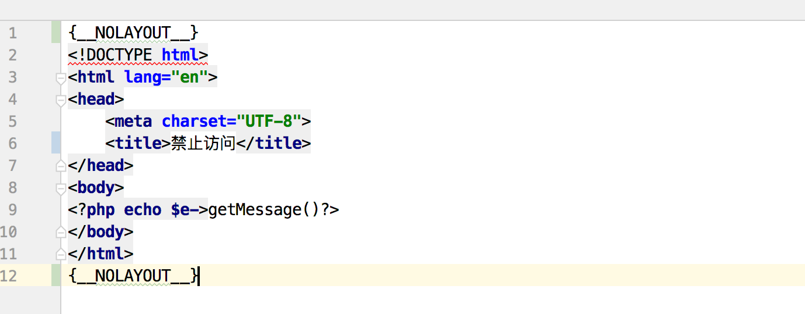

在使用HttpException手动抛出异常时，希望跳转到自定义的错误页面，官方的文章中是这样描述的。
可以使用\think\exception\HttpException类来抛出异常
// 抛出 HTTP 异常
throw new \think\exception\HttpException(404, '异常消息', null, [参数]); 一旦抛出了HttpException异常，可以支持定义单独的异常页面的模板地址，只需要在应用配置文件中增加：
'http_exception_template' => [
// 定义404错误的重定向页面地址
404 => APP_PATH.'404.html',
// 还可以定义其它的HTTP status
401 => APP_PATH.'401.html',
] 然而如果你这些都做完了，关闭调试模式，你会发现还是跳转到官方自定义的页面上去了，并且你发现http状态码是500，这是代码有问题啊，我抛出的是404啊。
然后打开log日志，你会发现果然报错了。
[ error ] [1]Uncaught think\exception\TemplateNotFoundException: template not exists:view/layout.html in /Applications/MAMP/htdocs/best.shiqidu.com/thinkphp/library/think/Template.php:1082
Stack trace: 这。。。
可怎么办。。。
只能看源码找问题了。
你会发现这个方法被调用了两次。
/**
* 解析模板文件名
* @access private
* @param string $template 文件名
* @return string|false
*/
private function parseTemplateFile($template)
{...} 第一次时$template模板文件时能找到的。但是第二次也是一个相对路径view/layout，所以报错了，继续顺藤摸瓜，发现这个函数。
/**
* 编译模板文件内容
* @access private
* @param string $content 模板内容
* @param string $cacheFile 缓存文件名
* @return void
*/
private function compiler(&$content, $cacheFile)
{
// 判断是否启用布局
if ($this->config['layout_on']) {
if (false !== strpos($content, '{__NOLAYOUT__}')) {
// 可以单独定义不使用布局
$content = str_replace('{__NOLAYOUT__}', '', $content);
} else {
// 读取布局模板
$layoutFile = $this->parseTemplateFile($this->config['layout_name']);
if ($layoutFile) {
// 替换布局的主体内容
$content = str_replace($this->config['layout_item'], $content, file_get_contents($layoutFile));
}
}
} else {
$content = str_replace('{__NOLAYOUT__}', '', $content);
}
...
关键就是这里了，如果你没有{__NOLAYOUT__}这个表示的话，它在渲染自定义404页面时会去加载布局文件（如果你在配置文件里开启了布局，如果没开启layout=true，也不会报这个错）。
而这个布局文件的路径是一个相对路径，这时如果你抛出异常的地方不是在application的controller里，就找不到布局文件了。所以就报错了。
怎么解决呢？其实也很简单。给自定义的404页面加上{__NOLAYOUT__}就行了。

这一点官方文档没有说明，还在坑里的同学可以参考改下。